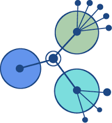
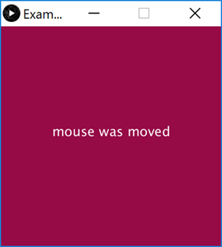

00: Induction
Coding in Processing
Induction
01: First Contact
1a: Introduction to Processing
Introduction to the PDE
Static Drawings
Formatting Shapes
Lab-1a
Online Class Monday 14-01-2019 12:30 PM
1b: Animating your Drawings
Basic Animation
Data Types
Lab-1b
Online Class Wed 16-01-2019 12:30 PM
02: Selection & Iteration
2a: Selection and Events
Conditional Statements
Mouse Events
Lab-02a
Online Class Mon 21-01-2019 12:30 PM
2b: Iteration (Loops)
Scope of Variables
Loops Simplified
While loops
For loops
Help - Bouncing Ball Challenge
Help - Moving Line Challenge
Lab-02b
Online Class Wed 23-01-2019 12:30 PM
03: Methods
3a: Methods (Part 1)
Mouse event methods
Bespoke methods
Lab-03a
Online Class Mon 28-01-2019 12:30 PM
3b: Methods (Part 2)
More on methods
Strings
Lab-03b
Online Class Wed 30-01-2019 12:30 PM
03: Methods
Colm Dunphy, Johnathan Brazil, Patrick Felicia, WIT
Online Class Mon 28-01-2019 12:30 PM
3a: Methods (Part 1)
Mouse event methods

Bespoke methods
Lab-03a

Online Class Wed 30-01-2019 12:30 PM
3b: Methods (Part 2)
More on methods
Strings
Lab-03b